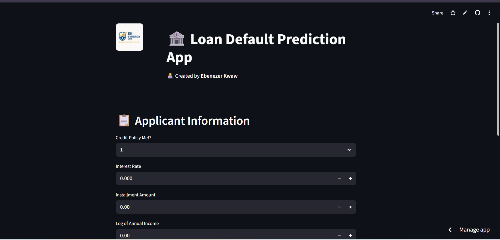

Loan Portfolio Lab is an educational interface for exploring a saved historical loan repayment model. I rebuilt the original Streamlit prototype as a responsive frontend and a separate FastAPI service, both deployed on Render.
What the original prototype did
The first version offered a Streamlit form for eight inputs and displayed a binary prediction. The saved model, however, expects 19 feature columns. The missing columns were automatically filled with zeros. That made the interface look complete while silently imposing assumptions about credit history, revolving balance, delinquencies, public records and loan purpose.

The redesign
The new Loan Portfolio Lab has three parts: a guided scenario form, a result panel, and plain language notes on what the output can and cannot establish. It starts with fictional values and asks visitors to avoid real applicant data. The form requests the numerical inputs and one loan purpose, which the API maps to seven purpose indicators.
- Complete feature mapping: the API checks the exact 19 feature names and class labels stored with the model. Interest percentage becomes a decimal; annual income becomes its natural logarithm; years of credit history become days.
- Validated API: FastAPI rejects missing fields, unexpected fields and out of range values. It loads only the model bundled with the repository, not a visitor supplied file.
- Responsive interface: a clear form, result bar, API connection indicator, reset action and readable layout support desktop and smaller screens.
- Separate Render services: the frontend is a static site, while the Python service exposes model information, a health check and a scoring endpoint. The frontend origin is explicitly allowed by the API.
- No scenario database: the API processes a submitted scenario for a response and does not save it.
Reading the result correctly
The target in the source notebook is named not.fully.paid. The new interface calls its output a historical not fully paid model score. It does not call a score a verified probability that a loan will default, and it does not return an approval or denial. A score of 10% for the fictional example simply reflects how that saved random forest responded to those inputs.
What is needed before institutional use
A real evaluation needs the training dataset and documented data rights, a reproducible test split appropriate to time, calibration analysis, subgroup and fairness assessment, feature provenance, monitoring for changing data, access controls, and independent review of applicable credit rules. Specific reasons for any real credit decision must be supported by the institution's actual decision process; this demo does not generate those reasons. The current app is a portfolio demonstration for model exploration.
Technology and next steps
The deployed version uses Python, Pandas, scikit-learn 1.5.1, FastAPI, HTML, CSS, JavaScript and two Render services. The code pins the model's original scikit-learn version and Python runtime for compatibility. Next, I would recover the source data, reproduce the training pipeline and evaluation, document model cards and data lineage, test accessibility, and only then consider a governed pilot with qualified reviewers.
← Back to all insights